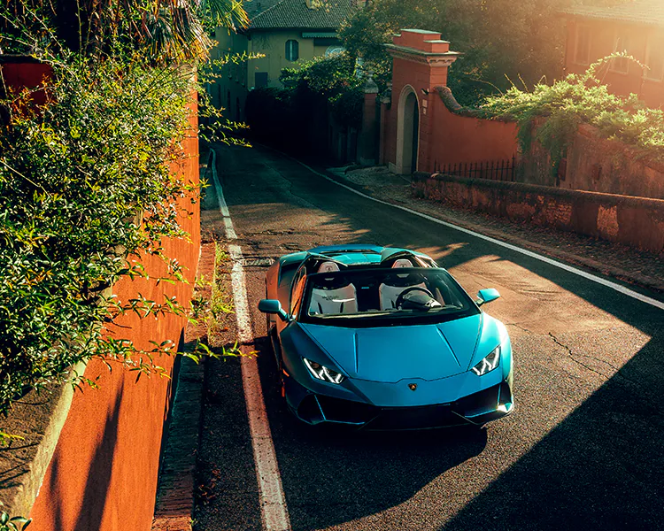
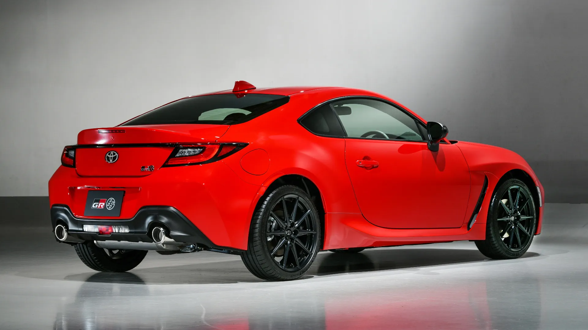
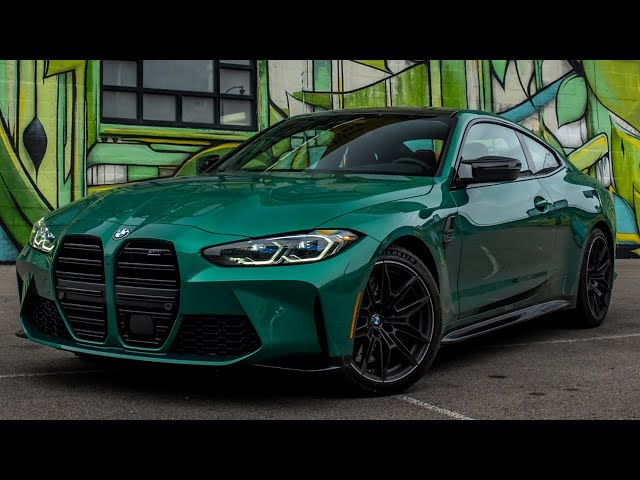
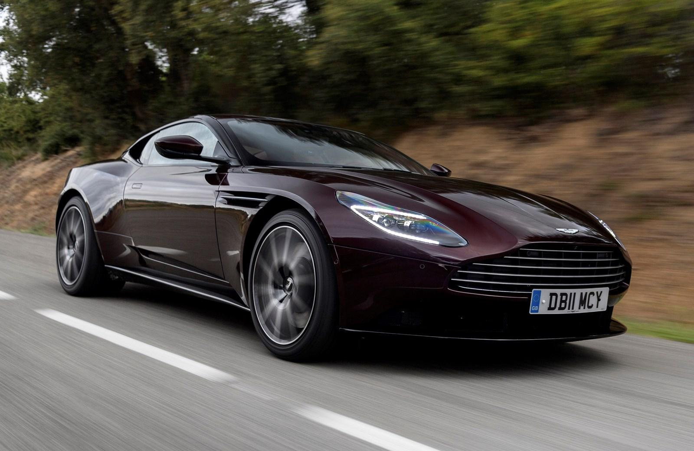
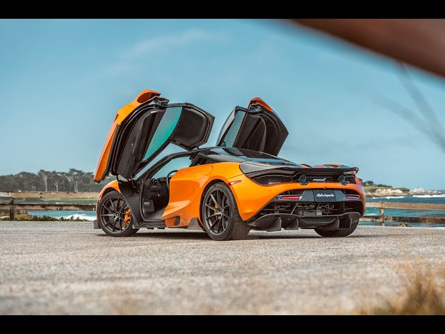
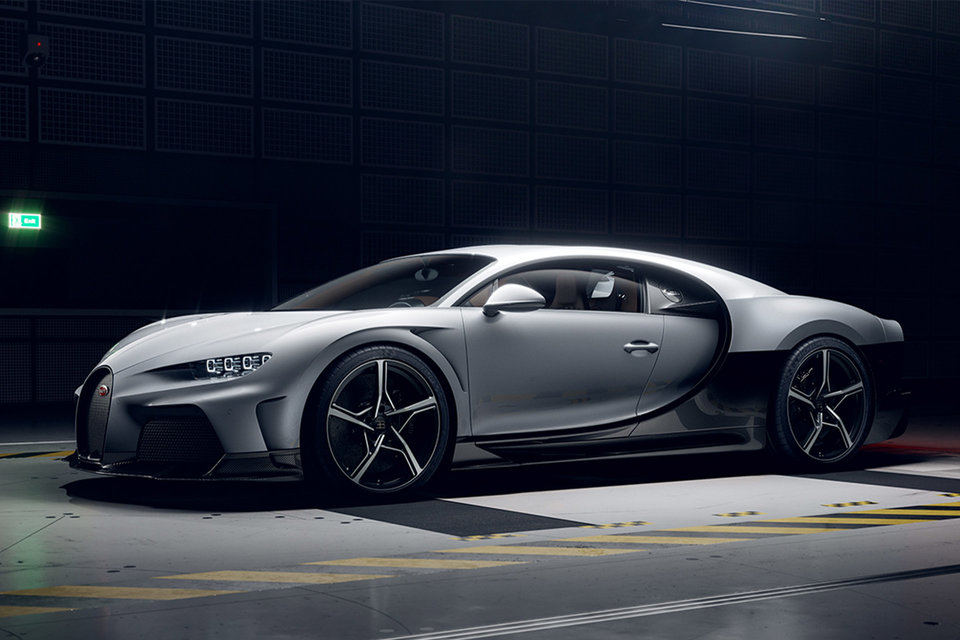
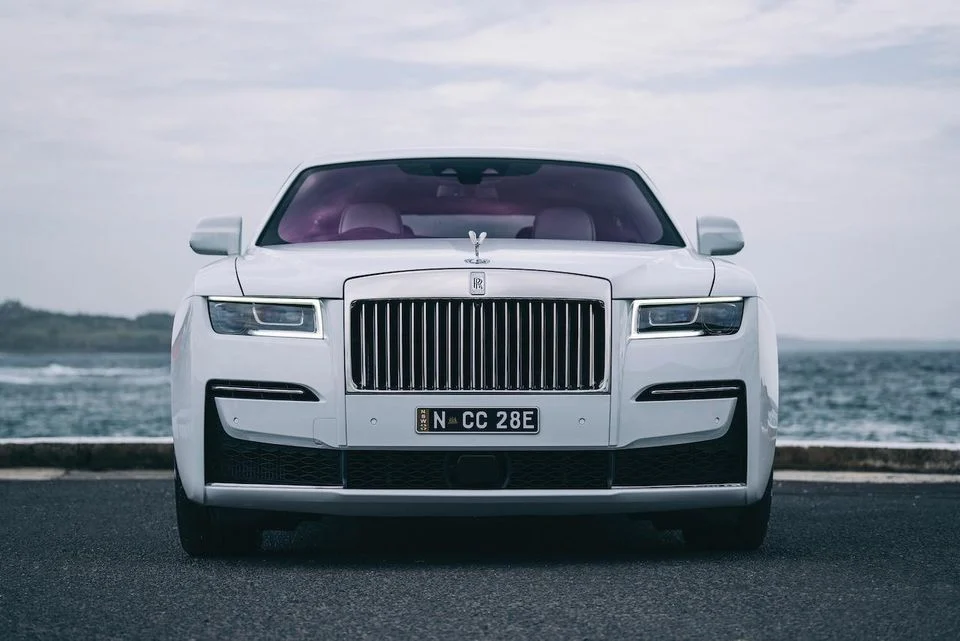

03 / Gallery
ONE PER BRAND











Est. 2025 · Cars of the World
A curated showcase of the world's most iconic automotive brands — from raw German engineering to Italian elegance and Japanese precision.
Explore Brands →01 / About
The automobile has been one of humanity's most transformative inventions. Since Karl Benz patented the first true motorcar in 1886, cars have shaped the way we live, travel, and experience the world.
From the chrome-drenched muscle cars of 1960s America to the razor-sharp supercars of modern Italy, each era and each country has contributed something unique to automotive culture. This site is a celebration of that diversity.
We cover the legacy manufacturers that built the industry and the modern brands redefining what a car can be — exploring the engineering, design, and stories behind the machines we love.
02 / Brands
Born on the racetrack, Ferrari is synonymous with speed, passion, and Italian flair. Every road car carries the DNA of a world championship pedigree, wrapped in sculpted bodywork that is pure emotion in metal.
Porsche proves that sports cars can also be supremely livable. With an obsessive focus on driver feedback and engineering precision, Stuttgart's finest offer a connection between human and machine few rivals can match.
Founded out of a feud with Ferrari, Lamborghini built an empire on outrageous angles, thunderous V12s, and a spirit of defiance. Every model is a statement that subtlety is wildly overrated.
The world's largest automaker by volume, Toyota has mastered reliability and innovation in equal measure. From the humble Corolla to the legendary Land Cruiser, Toyota's vehicles are built to last a lifetime.
Henry Ford didn't invent the car, but he democratised it. Over a century later, the blue oval still stands for American grit — from the Model T that started it all to the Mustang that electrified a generation.
The Ultimate Driving Machine. BMW has built its identity around the joy of driving — rear-wheel drive, near-perfect weight balance, and an unwillingness to let efficiency kill engagement.
The inventor of the automobile, Mercedes-Benz has led in luxury and safety for nearly a century. Three-pointed star cars blend cutting-edge technology with timeless elegance and remarkable comfort.
Tesla single-handedly changed the world's perception of electric vehicles. With blistering acceleration, over-the-air software updates, and a vast charging network, Tesla made EVs desirable rather than dutiful.
Few badges carry the prestige of the Aston Martin wings. Long the car of choice for fictional spies and real aristocrats, these hand-built British grand tourers combine bespoke craftsmanship with genuine sporting soul.
Born from Formula 1, McLaren brings race-car thinking to every road car it builds. Carbon fibre tubs, mid-engined layouts, and aerodynamic wizardry are standard-issue here — comfort comes second to performance.
Bugatti exists at the absolute apex of automotive achievement. With the Veyron and Chiron holding the title of world's fastest production cars in their eras, Bugatti treats engineering limits as mere starting points.
Rolls-Royce doesn't make the fastest or most powerful cars — it makes the finest. Each Spirit of Ecstasy-adorned vehicle is hand-crafted to order, offering a cocoon of silence and opulence unmatched anywhere on earth.
03 / Gallery






